철도신호기사 (2004-05-23 기출문제)
1과목: 전자공학
1. 평등 자기장 속에서 초속도를 가지고 자기장과 직각방향으로 진입하는 전자는 어떤 운동을 하는가?
- 등속 원운동을 한다.
- 나선운동을 한다.
- 직진한다.
- 편향된다.
(정답률: 알수없음)

2. 그림과 같이 증폭기를 3단 접속하여 첫 단의 증폭기 A1에 입력 전압으로 2㎶인 전압을 가했을 때 종단 증폭기 A3의 출력 전압은 몇 V 로 되는가? (단, A1, A2, A3의 전압이득 G1, G2, G3는 각각 60dB, 20dB, 40dB이다.)
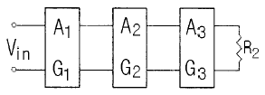
- 2
- 20
- 0.2
- 0.02
(정답률: 알수없음)
3. 증폭회로에서 출력전압의 일부 또는 전부를 입력측으로 되먹임(feedback)시키는 회로는?
- 전력 되먹임
- 전압 되먹임
- 음(negative) 되먹임
- 양(positive) 되먹임
(정답률: 알수없음)
4. 11.37을 2진수로 변환한 것은?
- (1011.01)2
- (1010.10)2
- (1011.00)2
- (1100.01)2
(정답률: 알수없음)
5. P형반도체에 대한 설명 중 틀린 것은?
- 진성반도체에 비소(As), 인(P),안티몬(Sb)과 같은 3가의 불순물을 첨가하여 부족 전자상태를 만든다.
- 다수 캐리어는 정공이고, 소수 캐리어는 자유전자이다.
- 억셉터 원자는 (-)이온이다.
- 3가의 불순물을 억셉터라 한다.
(정답률: 알수없음)
6. 검파효율 90%인 직선검파회로에 반송파 진폭이 10V이고 변조도가 50%인 진폭변조파를 인가하는 경우 부하저항에 나타나는 신호파의 진폭은 몇 V 인가?
- 2.5
- 4.5
- 5
- 9
(정답률: 알수없음)
7. CC증폭회로에 대한 설명으로 옳은 것은?
- 전압이득은 1보다 작고 전류이득은 대단히 크다.
- 전압이득은 대단히 크고, 전류이득은 1보다 작다.
- 전압이득과 전류이득 모두 1보다 크다.
- 내부저항이 작은 신호원 정합이나, 아주 높은 임피던스 부하를 구동할 때 사용한다.
(정답률: 알수없음)
8. 디지털 전송방식에 해당되는 것은?
- AM
- PM
- FM
- PSK
(정답률: 알수없음)
9. 회로에서 펄스폭이 Tp인 구형파를 입력할 때의 출력 파형은? (단, 시정수 τ ≪ Tp 인 조건이다.)
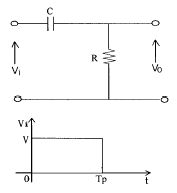
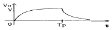
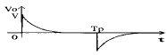
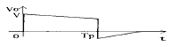
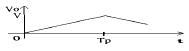
(정답률: 알수없음)
10. 콜피츠발진기에 비교할 때 하아틀리발진기의 장점에 해당되는 것은?
- 주파수 변환이 간단하다.
- 유도성 용량의 영향이 적다.
- 주파수 안정도가 특히 양호하다.
- 파형의 일그러짐이 거의 없다.
(정답률: 알수없음)
11. 그림은 트랜지스터 및 제너 다이오드를 사용한 제어형 정전압 안정화회로의 구성도이다. 빈칸 Ⓐ, Ⓑ에 알맞은 것은?
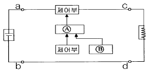
- Ⓐ 비교증폭부, Ⓑ 정류부
- Ⓐ 정류부, Ⓑ 검출부
- Ⓐ 비교증폭부, Ⓑ 제어부
- Ⓐ 비교증폭부, Ⓑ 검출부
(정답률: 알수없음)
12. 전위장벽에 대한 설명으로 옳은 것은?
- 다이오드의 임계파괴전압이다.
- PN접합사이의 전위값이다.
- 다이오드를 동작시키기 위한 최소전압이다.
- 다이오드에 흐르는 전류값이다.
(정답률: 알수없음)
13. ＪK 플립플롭에 대한 설명으로 옳지 않은 것은?
- 현재상태 Q 와 관계없이 Ｊ=1 이면 출력은 1 이다.
- 현재상태 Q 와 관계없이 Ｊ=1, K=1이면 출력은 토글된다.
- 현재상태 Q 가 0 일 때, K=1이면 출력은 0 이다.
- 출력
 이다.
이다.
(정답률: 알수없음)
14. 연산증폭기를 이용한 전력증폭회로에서 크로스오버 일그러짐을 제거하기 위해 사용되는 것은?
- 저항
- 콘덴서
- 다이오드
- 코일
(정답률: 알수없음)
15. 수정 발진기가 안정된 발진을 할 수 있는 주파수 f 의 범위는? (단, fB는 직렬공진주파수, fP는 병렬공진주파수이다.)
- fP ＜ f
- fB ＜ f
- fP ＜ f ＜ fB
- fB ＜ f ＜ fP
(정답률: 알수없음)
16. vc=20cosωc t[V]의 반송파를 vs=15cosωm t[V]의 신호파로 진폭 변조했을 때의 변조도는 몇 % 인가?
- 65
- 75
- 85
- 95
(정답률: 알수없음)
17. 클럭이 있는 RS플립플롭(clocked RS flip-flop)에서 클럭펄스가 0일 때, 이 회로의 기능은 무엇이 되는가?
- ＪK플립-플롭
- 래치(Latch)
- 토글(toggle)
- 램(RAM)
(정답률: 알수없음)
18. 그림과 같은 RC회로에서 RC 》W-1 인 교류파형을 인가하였을 때, 나타나는 출력전압 v2(t)는?
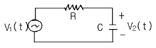
- 출력전압은 입력전압에 대한 미분형태로 나타난다.
- 출력전압은 입력전압에 대한 적분형태로 나타난다.
- 출력전압은 커패시터에 의해 충전되고, 전류는 흐르지 않는다.
- 출력전압은 입력전압과 동일하게 나타난다.
(정답률: 알수없음)
19. 그림과 같은 연산증폭기 회로의 출력전압 V0는 몇 V 인가? (단, R1=R2=2Ω, R3=R4=20Ω, V1=3V, V2=6V이다.)
- -0.2
- 0.2
- -20
- 20
(정답률: 알수없음)
20. 어떤 반전증폭기의 폐루프 이득이 25 이고, 연산증폭기의 개방루프이득은 100000 이다. 만약 이 회로에서 연산증폭기를 개방루프이득이 200000인 연산증폭기로 교체한다면 폐루프 이득은?
- 12.5
- 17.5
- 25
- 50
(정답률: 알수없음)
2과목: 회로이론 및 제어공학
21. 다음에서 Fe(t)는 우함수, Fo(t)는 기함수를 나타낸다. 주기함수 f(t)=Fe(t)+Fo(t)에 대한 다음의 서술중 바르지 못한 것은?
- Fe(t)= Fe(-t)
- Fo(t)= - Fo(-t)
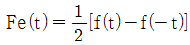
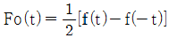
(정답률: 알수없음)
22. 어떤 제어계에서 입력신호를 가한 다음 출력신호가 정상 상태에 도달할 때까지의 응답은?
- 정상응답
- 선형응답
- 과도응답
- 시간응답
(정답률: 알수없음)
23. 다음 회로의 정상상태에서 저항에서 소비되는 전력[W]은? (단, R=50[Ω], L=50[H]이다.)
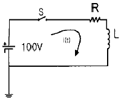
- 50
- 100
- 150
- 200
(정답률: 알수없음)
24. 분포정수 전송선로에 대한 서술에서 잘못된 것은?
 인 선로를 무왜형로라 한다.
인 선로를 무왜형로라 한다.- R = G = 0인 선로를 무손실회로라 한다.
- 무손실선로, 무왜형선로의 감쇠정수는 √RG 이다.
- 무손실선로, 무왜형회로에서의 위상속도는
 이다.
이다.
(정답률: 알수없음)
25. 다음의 설명 중 틀린 것은?
- 최소위상 함수는 양의 위상여유이면 안정하다.
- 최소위상 함수는 위상여유가 0이면 임계안정하다.
- 최소위상 함수의 상대안정도는 위상각의 증가와 함께 작아진다.
- 이득 교차 주파수는 진폭비가 1 이 되는 주파수이다.
(정답률: 알수없음)
26. 특성방정식이 다음과 같이 주어지는 계가 있다. 이 계가 안정되기 위하여서는 K 와 T 사이의 관계는 어떻게 되는가? (단, K와 T는 정의 실수다)
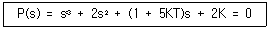
- (1+5KT) ＞ K
- (5KT) ＞ K
- (1+5KT) ＜ K
- (5KT) ＜ K
(정답률: 알수없음)
27. 그림과 같은 정현파 교류를 푸리에 급수로 전개할 때 직류분은?
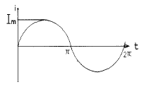
- Im
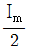
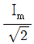
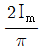
(정답률: 알수없음)
28. 3상 △부하에서 각 선전류를 Ia, Ib, Ic 라 하면 전류의 영상분은? (단, 회로 평형 상태임)
- ∞
- -1
- 1
- 0
(정답률: 알수없음)
29. 함수 f(t)=e-2tcos3t의 라플라스 변환은?
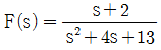
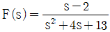
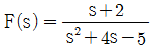
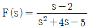
(정답률: 알수없음)
30. 다음의 전달함수를 갖는 회로가 진상 보상회로의 특성을 가지려면 그 조건은 어떠한가?
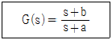
- a ＞ b
- a ＜ b
- a ＞ 1
- b ＞ 1
(정답률: 알수없음)
31. 그림과 같은 제어계에서 단위계단입력 D가 인가될 때 외란 D에 의한 정상편차는?
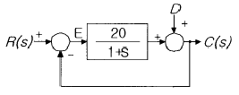
- 20
- 21
- 1/20
- 1/21
(정답률: 알수없음)
32. 구동점 임피던스(driving point impedance) Z(s)에 있어서 영점(zero)은?
- 전류가 흐르지 않는 상태이다
- 회로상태와 관련없다
- 개방회로 상태를 나타낸다
- 단락회로 상태를 나타낸다
(정답률: 알수없음)
33. 3개의 같은 저항 R[Ω]를 그림과 같이 △결선하고, 기전력 V[V], 내부저항 r[Ω]인 전지를 n개 직렬 접속했다. 이 때 전지내를 흐르는 전류가 I[A]라면 R는 몇[Ω]인가?
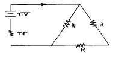
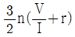
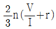
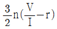
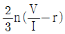
(정답률: 알수없음)
34. 다음의 상태선도에서 가관측성(observability)에 대해 설명한 것 중 옳은 것은?
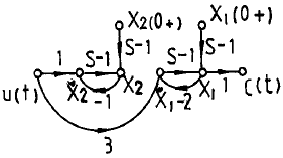
- x1은 관측할 수 없다.
- x2은 관측할 수 없다.
- x1, x2 모두 관측할 수 없다.
- 이 계통은 완전히 가관측에 있다.
(정답률: 알수없음)
35. Δ 결선된 부하를 Y결선으로 바꾸면 소비전력은 어떻게 되는가? (단, 선간전압은 일정하다.)
- 3배
- 6배
- 1/3 배
- 1/6 배
(정답률: 알수없음)
36. 무접점 릴레이의 장점이 아닌 것은?
- 동작속도가 빠르다.
- 온도의 변화에 강하다.
- 고빈도 사용에 견디며 수명이 길다.
- 소형이고 가볍다.
(정답률: 알수없음)
37. 다음 그림 중 ①에 알맞는 신호 이름은?
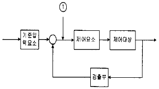
- 기준입력
- 동작신호
- 조작량
- 제어량
(정답률: 알수없음)
38. 어떤 회로에 e(t)=Em sin ωt[V]를 가했을 때,
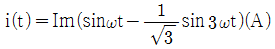
가 흘렀다고 한다. 이 회로의 역률은?- 0.5
- 0.75
- 0.87
- 0.92
(정답률: 알수없음)
39. z 변환함수
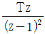
에 대응되는 라플라스 변환함수는? (단, T는 이상적인 샘플러의 샘플 주기이다.)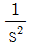
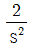
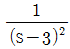
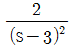
(정답률: 알수없음)
40. 그림과 같은 회로에서 ei를 입력, eo를 출력으로 할 경우 전달함수는?
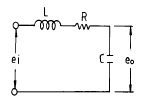
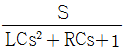
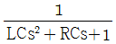
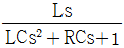
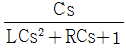
(정답률: 알수없음)
3과목: 신호기기
41. 유도전동기의 슬립 측정방법이 아닌 것은?
- 직류밀리 볼트계법
- 프로니 브레이크법
- 수화기법
- 스트로보스코프법
(정답률: 알수없음)
42. 궤도회로 유로는 계전기 낙하전압 또는 전류의 몇[%]이하로 하여야 하는가?
- 40
- 50
- 60
- 70
(정답률: 알수없음)
43. 다음 중 IGBT(절연게이트 바이폴라트랜지스터)의 특성으로 틀린 것은?
- 전압구동 소자이다.
- 전류구동소자이다.
- 고속스위칭 성능을 가지고 있다.
- Turn-off시 넓은 안전동작영역을 가지고 있다.
(정답률: 알수없음)
44. 전동차단기에서 전동기의 클러치 조정은 차단봉 교체시 시행하여야 하며 전동기의 슬립전류는 몇 [A] 이하로 하여야 하는가?
- 5
- 6
- 7
- 8
(정답률: 알수없음)
45. 20[KW]의 농형유도 전동기의 기동에 가장 적당한 기동방법은?
- Y - △기동
- 기동보상기에 의한기동
- 저항기동
- 직접기동
(정답률: 알수없음)
46. 단상 100[KVA],13200/200[V] 변압기의 저압측 선전류의 유효분[A]는?
- 300
- 400
- 500
- 700
(정답률: 알수없음)
47. 고압모터의 보호방식에 속하지 않는 것은?
- 다성능 과전류 계전기
- 부족전압 계전기
- 유도형 과전류 계전기
- 과속도 보호
(정답률: 알수없음)
48. 수도권 C.T.C 구간에서 궤도 송전측 및 착전측에 쵸크를 설치하는 목적은?
- 과전압 유도시 양 레일을 연결시키므로서 기기 및 인명 피해를 방지
- 직류 바이어스 궤도계전기의 안전동작 전압 유지
- 각 기기가 주파수의 영향을 받지 않도록 유도리액턴스 역할
- 열차 점유시 유도되는 유기전압 또는 전차전류에 의한 유도전압 방지
(정답률: 알수없음)
49. 직류 단궤조식 궤도회로에 대한 설명중 적당하지 않은 것은?
- 전차전류 방해 전압에 대한 방호가 간단하다.
- 교류 궤도회로에 비해 경제적이다.
- 임피던스는 복궤조식의 4배로 한다.
- 타방식에 비해 구조가 간단하다.
(정답률: 알수없음)
50. 3상 유도전동기의 회전자 철손이 작은 이유는?
- 성층 철심을 사용하기 때문에
- 주파수가 낮기 때문에
- 효율, 역률이 나쁘기 때문에
- 2차가 권선형이기 때문에
(정답률: 알수없음)
51. 60[Hz]의 변압기에 50[Hz]의 동일전압을 가했을 때의 자속 밀도는 60[Hz]때의 몇배인가?
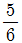
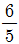
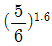
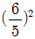
(정답률: 알수없음)
52. 다음 중 변압기의 자속을 만드는 전류는?
- 부하 전류
- 철손 전류
- 자화 전류
- 여자 전류
(정답률: 알수없음)
53. 전류의 흐르는 방향에 따라 동작하는 계전기는?
- 무극 계전기
- 유극 계전기
- 연동 계전기
- 선조 계전기
(정답률: 알수없음)
54. 일정전압으로 운전되는 직류발전기의 손실이 a+bI2으로 때 어떤 전류에서 효율이 최대가 되는가? 단, a, b는 정수임)
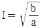
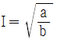
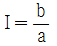
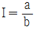
(정답률: 알수없음)
55. 부흐홀쯔(Buchholz) 계전기로 보호되는 기기는?
- 변압기
- 발전기
- 동기 전동기
- 회전 변류기
(정답률: 알수없음)
56. 교류 NS형 전기선로전환기 동작과정은?
- 마찰연축기 → 전환치차 → 중간치차 → 전동기 → 동작간
- 전동기 → 마찰연축기 → 중간치차 → 전환치차 → 동작간
- 중간치차 → 전환치차 → 마찰연축기 → 전동기 → 동작간
- 전환치차 → 마찰연축기 → 중간치차 → 전동기 → 동작간
(정답률: 알수없음)
57. 전기기계의 철심을 성층하는 이유로 가장 적절한 것은?
- 기계손을 적게 하기 위하여
- 히스테리시스손을 적게 하기 위하여
- 표유 부하손을 적게 하기 위하여
- 와류손을 적게 하기 위하여
(정답률: 알수없음)
58. 전기전철기(NS형)에 사용되는 전동기의 기동 방식은?
- 단상 반발기동
- 저항식 분상기동
- 기동 보상기기동
- 콘덴서 기동
(정답률: 알수없음)
59. 모선보호에 사용되는 것은?
- 표시선 계전 방식
- 전류 차동 보호방식
- 방향 단락 계전방식
- 전력 평형 보호방식
(정답률: 알수없음)
60. 전기 전철기의 동작 순서가 옳은 것은？
- 전환 – 해정 – 쇄정 - 표시
- 해정 – 전환 – 쇄정 - 표시
- 표시 – 해정 – 쇄정 - 전환
- 표시 – 쇄정 – 해정 - 전환
(정답률: 알수없음)
4과목: 신호공학
61. 고전압 임펄스(High Voltage impulse) 궤도회로를 설치하고자 사리누설저항을 측정하였더니 2Ω/km 가 측정되었다. 이론상 설치가능한 궤도회로의 길이는 몇 km 인가?
- 1.2
- 1.4
- 1.6
- 1.8
(정답률: 알수없음)
62. 한 선구에서 둘 이상의 선구로 분기되는 지점을 향하여 운행 중인 열차가 정해진 행선지와 다른 방향으로 진입할 우려가 있는 곳에 설치하는 것은?
- 자동진로설정장치
- 자동폐색신호기
- 열차번호인식기
- 열차번호처리장치
(정답률: 알수없음)
63. ATS-S형의 지상자와 차상자의 공진조건으로 옳은 것은?
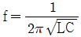
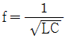
(정답률: 알수없음)
64. 전기연동장치의 전철제어회로에 관한 설명 중 틀린 것은?
- 전철제어계전기는 전철쇄정계전기의 무여자로 쇄정한다.
- 전철제어계전기는 전철쇄정계전기의 여자로 동작한다.
- 전철제어계전기는 전철쇄정계전기의 여자로 쇄정한다.
- 전철제어계전기는 유극이며 전철쇄정계전기는 무극이다.
(정답률: 알수없음)
65. 궤도회로를 설치하기 위하여 사리누설저항을 측정하고자 한다. 다음 중 어떤 방법이 가장 좋은가?
- 휘이트스토운브리지를 사용하여 측정하도록 한다.
- 전압전류계법으로 측정하도록 한다.
- 메가로 측정하도록 한다.
- 고저항 절연저항계로 측정하도록 한다.
(정답률: 알수없음)
66. 분배주 궤도회로장치의 궤도전원은 60Hz 상용주파수를 사용한 경우 궤도상에는 몇 Hz 가 되는가?
- 30
- 60
- 120
- 240
(정답률: 알수없음)
67. 수도권 지하철 열차자동제어장치(ATC) 구간의 속도코드 상한치는 몇 km/h 인가?
- 70
- 80
- 90
- 100
(정답률: 알수없음)
68. 임피던스본드의 설치에 관한 사항으로 틀린 것은?
- 복궤조식 궤도회로의 경계점에 설치한다.
- 전차선 전류는 인접 궤도회로에 흘러가게 한다.
- 신호전류는 인접 궤도회로에 흐르지 못하도록 한다.
- 1차 코일과 2차 코일의 권수비를 2 : 1로 한다.
(정답률: 알수없음)
69. 신호보안장치의 접지공사 시공방법 중 틀린 것은?
- 제3종접지공사의 접지극은 2개소 이상의 접지에 공용할 수 있다.
- 고압용 기기 및 접지극과 신호용 접지와의 이격거리는 5m 이상으로 한다.
- 매설 케이블류와 접지극의 이격거리는 3m 이상으로 한다.
- 접지극은 타입식 접지봉을 사용하고 지표면보다 750mm 이상 매설한다.
(정답률: 알수없음)
70. NS형 전기 선로전환기의 동작간의 동정은 몇 ㎜ 인가?
- 185
- 215
- 235
- 255
(정답률: 알수없음)
71. 건널목 제어기에 접속되어 있는 궤도회로의 사용 목적은?
- 공진회로의 일부
- 발진부 궤환회로의 일부
- 증폭부 바이어스 저항의 일부
- 정류부 평활회로의 일부
(정답률: 알수없음)
72. 서행 허용표지가 있는 자동폐색 신호기의 도식기호는?
(정답률: 알수없음)
73. 국철 서울 사령실과 지하철로 인입, 인출되는 열차번호를 송수신하기 위하여 SSC Controller와 인터페이스 되는 것은?
- CDTS
- MPS
- 서버
- Host Computer
(정답률: 알수없음)
74. 연동도표 작성시 쇄정란에 기재하는 내용이 아닌 것은?
- 진로를 구성하였을 때 쇄정되는 선로전환기 번호
- 진로를 구성하였을 때 쇄정되는 취급버튼 번호
- 폐로쇄정에 관계되는 궤도회로명
- 선로전환기 철사쇄정에 관계있는 궤도회로명
(정답률: 알수없음)
75. 전철기 전환 제어계전기를 나타낸 기호는?
- WLR
- WR
- ZR
- KR
(정답률: 알수없음)
76. 궤도회로의 설치를 설계한 구간에 15m의 드와프트 거더(Dwaft girder)가 있다. 어떤 설계를 하여야 하는가?
- 사구간을 만들어 신호제어를 한다.
- 편궤조 궤도회로를 만든다.
- 사구간 보완회로를 만든다.
- 거더를 바꾸도록 설계한다.
(정답률: 알수없음)
77. 분주궤도회로의 궤도회로가 단락되었을 때의 소비전력은 복궤조식의 몇 배가 되는것이 가장 이상적인가?
- 1.3
- 1.5
- 1.7
- 1.9
(정답률: 알수없음)
78. 신호설비를 이용한 운전시격 단축방안이 아닌 것은?
- 도착선을 상호 사용할 수 있도록 신호설비 설치
- 유도신호기의 사용
- 구내 폐색신호기 건식
- 가속도와 감속도가 큰 고성능 동력차 사용
(정답률: 알수없음)
79. 궤도회로의 극성에 관한 설명으로 맞는 것은?
- 인접 궤도회로와의 사이에 레일절연을 단락했을 때 궤도계전기가 여자한다.
- 인접 궤도회로와의 사이에 레일절연을 단락했을 때 궤도계전기가 낙하한다.
- 임펄스 궤도회로의 경우 궤도회로의 극성을 맞추지 않아도 된다.
- 착전단이외의 개소에는 궤도회로의 극성을 고려하지 않아도 된다.
(정답률: 알수없음)
80. 전자식 원격제어장치(ERC)의 중형(ERC-M) 정보용량으로 옳은 것은?
- 제어정보 72
- 표시정보 120
- 제어정보 144
- 표시정보 192
(정답률: 알수없음)